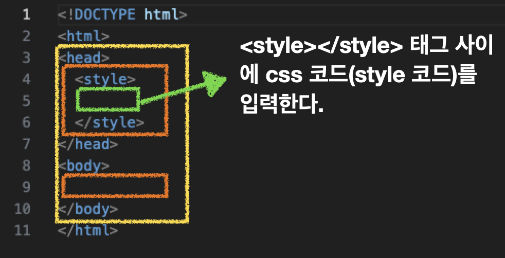
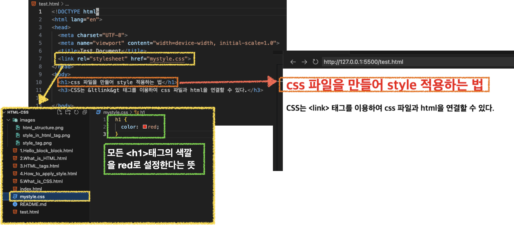

CSS란 무엇일까??
참고 자료
-
Cascading Style Sheets의 약자이다.
-
HTML 태그들의 색깔, 모양, 위치, 배열 등 style 속성을 변경할 수 있다.
-
즉, HTML에서 style 부분만 따로 빼고 싶어서 CSS 문법을 만들었다.
CSS를 어떻게 관리하는가?
1. html 파일 안에서 style 태그로 관리한다.
<head></head> 태그 안에 <style></style> 태그를 찾아 볼 수 있다.
<style></style> 태그 사이에 코드를 입력하여 여러 요소들에 style을 적용시킬 수 있다.

2. css 파일을 따로 만들어서 관리한다. (여러 html 파일에 반복 사용 가능)
mystyle.css 라는 파일을 만들었고
해당 style을 적용할 test.html에서 <head></head>안에 있는 <link> 태그에서 연결해주니 바로 css가 적용되었다.
